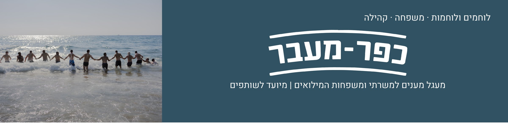
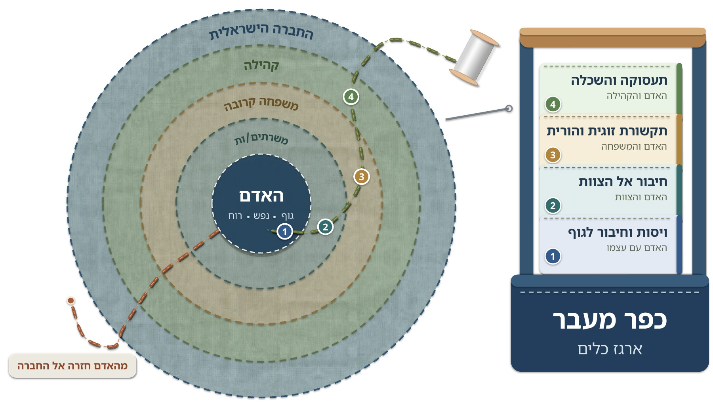
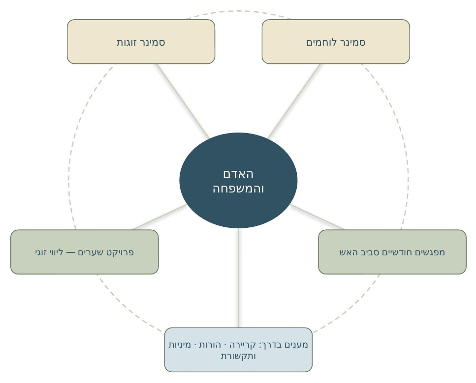
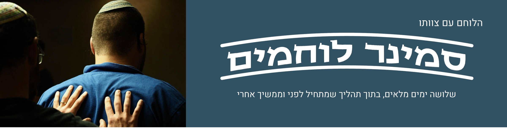
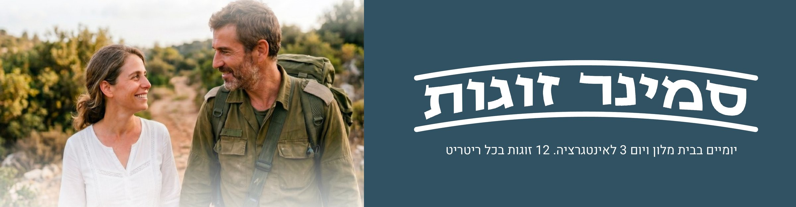

כפר מעבר מחזק את משרתי המילואים ואת המערכת המשפחתית שלהם מול אתגרי המעבר וחוויות הסף. מרחב שמציע הזדמנות, שפה וכלים להתמודדות פרואקטיבית ומצמיחה.
נותנים גב
אנחנו מחברים אנשים מכל קצוות הישראליות: אנשי טיפול, חינוך, ארגון, לוגיסטיקה ופיננסים. שותפים בערבות הדדית וברצון לתת גב למי שלחמו ועדיין לוחמים עבורנו, בדרך חזרה הביתה, לשלום ולשגשוג. אנחנו רואים בהם מנהיגי החברה בהווה ובעתיד.
מקום אחד, מעטפת מענים
כפר מעבר מנביט ומטפח פרויקטים סביב משרתי המילואים והמערכת המשפחתית שלהם.


השפה המשותפת
קהילתיות ומיודעות טראומה. גישה חיובית שרואה במשבר נתמך הזדמנות להתחדשות ואת הכלים להתמודד איתו ככלים לניהול אורח חיים גמיש ונוכח החיוני לתקופתנו. מעבר ממגננה למוגנות וכלים לוויסות, גישה חווייתית וטרנספורמטיבית שרואה את האדם כשלם: גוף, נפש ורוח.
אחרי הסמינר
אנחנו מפתחים מענים נוספים להעמקה, למשל בנושא מיניות, תקשורת והורות, כדי ליצור קהילה רחבה של זוגות בוגרים ומעגל זוגות שממשיך להיות בקשר של שיתוף, הכרה ותמיכה. למי שיידרש — ליווי זוגי נוסף בנוסח פרויקט שערים.
מפת המענים והמשכיות
המענים פועלים גם כפילטרים לצרכי המשתתפים — כל מענה יכול להפנות לצורך הבא שמתעורר.



סמינר הלוחמים הוא קודם כול מקום של מנוחה ושייכות. מכאן הוא מציע לצוותי המילואים מרחב מוגן, מזין ומודרך, המאפשר סגירת מעגלים אישיים וצוותיים, זיהוי ועיגון משאבים, רכישת שפה, כלים ומיומנויות לניהול והנהגה עצמית.
הצוות עובר את הדרך יחד. הסמינר הוא לב התהליך, וההכנה והאינטגרציה מחברות אותו לחיים שמחוץ לקפסולה.
התהליך המלא — מסע מתמשך
שיחה עם רכז החוסן של היחידה והנעת "צוות מוביל" מתוך הלוחמים. כשישה שבועות לפני הסמינר.
הצגת כפר מעבר לכל הצוות. בירור כנה ופתוח. בסופו כל לוחם מחליט אם הוא נכנס.
חוזה הסכמה מדעת. מילוי השאלונים הוא הדרך של הצוות להגיד "אנחנו בפנים" — והדרך שלנו לוודא שהתהליך בטוח עבורם. הנתונים מנותחים בחיסיון מלא.
הרכבת צוות ההנחיה בהתאמה לאופי היחידה, וזום הכנה מקצועי לצוות.
שהות משותפת בקפסולה, בטבע. מסע המשלב מודעות גופנית מוגברת, תקשורת בין אישית מקרבת ועיצוב תמונת עתיד.
כשבוע אחרי — סיכום צוות ההנחיה. כחודש אחרי — מפגש אינטגרציה לצוות (פיזי או בזום) ושאלוני מחקר מסכמים, שמשרתים גם את דיוק המענה לצוותים הבאים.
דרך הפעולה
הגוף לפני השכל. לפני הכול, מה שעובר את האירועים זה הגוף. דרך פעילויות גופניות נוצרים ויסות ואינטגרציה.
בניית הכוחות. אנחנו מגבירים כוחות ועוגנים — עבור האדם ועבור הצוות.
כלים ליום שאחרי. הצוות לומד לקרוא את איתותי הסטרס של הגוף, ודרכם לנטר את עצמו ואת חבריו גם אחרי שהסמינר נגמר.
הכול בהזמנה. כל פעילות היא הצעה. כל אחד בוחר במה להשתתף, וזה בסדר גמור. מטפל גוף זמין לאורך הסמינר ועמדת עיסוי פתוחה באופן קבוע.

המלחמה והשירות הממושך יצרו בדידות קיומית בתוך הקשר. היא קיימת בהיעדרות הפיזית של הלוחם או הלוחמת, וגם בהיעדרות הרגשית שממשיכה אחרי החזרה הביתה. סמינר הזוגות מחזיר תחושת ביחד.
שתי דרכים התפצלו בתחילת המלחמה: שני נתיבי חיים, אירועים שבן או בת הזוג לא היו שותפים להם, וגם אירועים משותפים שנחוו אחרת. הסמינר מקרב אותן מחדש, בתוך מרחב קבוצתי מחזיק, ומעניק לכל זוג כלים, שפה ומרחב.
לצאת מהבדידות הקיומית, לחזור להיות בקשר מטיב ולהחזיר את התקווה לצמיחה הזוגית.
למי זה מתאים
הסמינר מיועד לזוגות של משרתי המילואים ששירתו שירות משמעותי במלחמת חרבות ברזל. אין דרישה למספר מסוים של ימי מילואים או לוותק בזוגיות. שלושה קריטריונים:
בני הזוג רוצים לקדם את הזוגיות, ויש בחוויית המילואים והמלחמה משהו שנתפס אצלם כמעכב או חוסם את הצמיחה הזוגית.
בני הזוג נמצאים במקום שמאפשר את התהליך, ללא משבר חריף (רגשי, או חוויית קצה במילואים או בזוגיות, כמו עמידה על סף גירושים).
בני הזוג יכולים לעשות עבודה זוגית גם בלי ליווי צמוד לאורך כל הפעילות.
מה הערך למשתתפים
אינטגרציה של תקופת המילואים בחיים הזוגיים — גם אחרי שהיא מסתיימת. הזוג מייצר עמדה נרטיבית חדשה על התקופה, על המורכבויות והקשיים שבה, ויוצר קרבה מחודשת. נקודת מפנה בתנועה הזוגית, שפה חדשה, ועמדה חדשה מול המילואים — עם הפנים קדימה.
איך מצטרפים
מילוי טופס הרשמה בעמותה.
בדיקת רלוונטיות ויכולת שיתוף זוגי, והבנה אם הזוג חווה אירוע קצר או נמצא בנקודת קצה.
צפייה בזום היא חובה.
שיחה עם מטפל ומטפלת זוגיים מצוות ההנחיה, על מה שעלה מטופס ההרשמה (תגובות פוסט-טראומטיות, יכולת לתקשר, דפוסים), כדי לוודא שהמרחב הקבוצתי יכול להיטיב עם הזוג.
יומיים בבית מלון ויום אינטגרציה.
פרטי הרשמה
- הרשמה לשתי התוכניות: הדר חמיידס · 052-353-2244
- מנהל התוכנית: גאי קרום · 052-867-1054 · gai@gaikrom.co.il
- ניהול מקצועי של התהליך: אלעד חדד, MA, SEP · 054-5413114 · idhadad@gmail.com